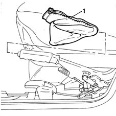

3380A46 handbrake lever protective boot - r r
- Path
- Procedures > 33 BRAKING SYSTEM > 3380 HANDBRAKE > 3380A handbrake control and linkage > 3380A46 handbrake lever protective boot - r r
- Kind
- repair procedure (removal / refitting; the operation number is the code)
- Applies to
- all engines; all production periods
- Interactive page
- https://sloeber94.github.io/elrnDB-fMltpl/en/#/2891668
Applies to: all engines; all production periods
 Removing
Removing
 Refitting
RefittingOpen the left side door.
1. Open the button and remove the boot from the handbrake lever.

Applies to: all engines; all production periods
Refitting
RemovingPosition the boot on the lever and secure the button.
Close the left front side door.